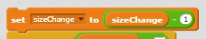
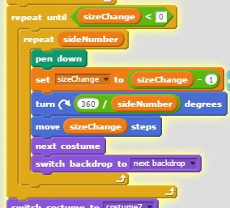
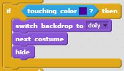

| Core4 Concept | Technical Definition | Real-Life Analogy | Python Example | Scratch Example |
|---|---|---|---|---|
| Variables | an element, feature, or factor liable to vary or change | The number of donuts in an order is a vasriable. | numDonuts = 12 |  a Scratch variable |
| Loops | a sequence of code that is continually repeated until a certain condition is reached | A human's life: same routine everyday | while numDonuts < 24 : discount = False |  a scratch loop |
| Conditionals | how computer scientists tell computers to make choices | If it's rainging outside, then you will use an umbrella. | if user_input == "yes": print("Good") |  |
| Functions | a block/section of code that performs a defined action | When someone gives you a certain number of donuts, multiply that number by $3 | def aFunction: if numDonuts >= 24: discount = True if discount: costDonuts = costDonuts - 5 | 
|